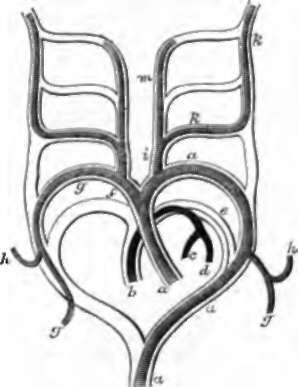

214. The Heart
Description
This section is from the book "Animal Physiology: The Structure And Functions Of The Human Body", by John Cleland. Also available from Amazon: Animal Physiology, the Structure and Functions of the Human Body.
214. The Heart
The Heart is at first a straight tube which runs forwards towards the head, from the point where the omphalomesenteric veins unite. But it soon elongates so much that it is thrown into a loop, the prominence of which becomes converted into the ventricular portion of the organ, while the lower part forms the auricular portion, and the upper a common arterial trunk, the truncus arteriosus. Subsequently, the truncus arteriosus is divided longitudinally into aorta and pulmonary artery, and the auricles and ventricles are each in like manner divided into right and left cavities. But the truncus arteriosus originally passes up and splits into two divisions, from which come off five pairs of branchial arches, not, however, all existing at one time, but the foremost of them disappearing as the hinder arches come into view. These arches, which seem to correspond with the branchial processes, pass partially round the oesophagus, and open into two vessels which descend side by side in front of the vertebral column, the primordial aortae. The two aortae afterwards become fused into one, which continues at first to arise by a right and left root, and permanently does so in the lower classes of vertebrates; but in birds the right root alone remains, and in mammals only the left root, while the other is obliterated. The fourth branchial arch of the left side remains in mammals as the arch of the aorta, and the fifth is that from which the pulmonary artery is developed.
Fig. 157. Plan of the Branchial Arches in Mammals. The portions in outline are obliterated, a, a, a, Aorta; b, pulmonary artery; c, d, right and left pulmonary arteries; e, truncus arteriosus, obliterated after birth; f, innominate artery; g, g, g, subclavian arteries going to the upper limbs ; h, h, vertebral arteries ; i, common carotid; k, k, internal carotid ; m, external carotid artery. Rathke.
215. At the period of the closure of the amnion, while the yelk sac is still widely connected with the intestine, the allantois, already mentioned, makes its appearance in front of the embryo, at the lower end of the body (fig. 156). It rapidly expands into a large vesicle covered with blood-vessels, and soon becomes constricted in the middle. The vesicular part at the base remains permanently as the urinary bladder; the constriction is termed the urachus, and emerges at the opening which is gradually narrowed to form the navel; and the vesicle beyond continues to expand till it reaches the chorion, then becomes flattened on the inner surface of that membrane, and furnishes blood-vessels which penetrate into all its villi In mammals, a great development of blood-vessels takes place at one or more parts, varying in different families; and at these parts the vessels of the uterine mucous membrane likewise expand to form, in conjunction with the allantoic structure, the placenta, which consists essentially of aggregated tufts of blood-vessels belonging to the fœtus, projecting into sinuses filled with maternal blood, whence they suck up supplies both of nourishment and oxygen. In the human subject, the placenta is circular and limited to an area which, at the full term, is only about 7 or 8 inches in diameter. In birds and reptiles the allantois spreads out as in mammals, but retains its membranous and hollow construction, and Has principally, if not entirely, a respiratory function. In amphibia the allantois is a mere urinary bladder, and the period of allantoic circulation is not represented.
As development in the mammal proceeds, the placenta is separated by a greater distance from the embryo; the original hollow of the urachus and placental part of the allantois disappears, and the placenta is united to the navel by an umbilical cord, consisting of vascular trunks, gelatinous connective tissue, and an investment of thickened amnion. The arteries which convey the blood to the placenta are two in number, arising within the pelvis, and pass up one on each side of the urinary bladder. While within the abdomen, they are termed hypogastric, and in the cord they are called umbilical arteries. The veins which return the blood from the placenta to the fœtus are also at first two in number, but the right one speedily disappears, so that in the cord there are only three vessels, namely, two umbilical arteries and one umbilical vein. These are twisted spirally, the arteries having the appearance of winding round the vein. The umbilical vein, entering at the navel, passes up to the under surface of the liver, where it lies in the longitudinal fissure between the right and left lobes of that organ, communicates freely with the portal vein, and is prolonged backwards, under the name of ductus venosus, to join the inferior vena cava.
216. When it is considered that throughout faetal life the lungs are of no service, and that respiration is carried on by means of the placenta, it will be at once perceived that the course of the circulation must be very different then from what it is afterwards, and that a sudden change must take place at birth. This is really the case; and in connection with the course of the circulation there are some foetal peculiarities of the heart and pulmonary artery. In the faetal heart the annulus ovalis of the right auricle is an open foramen ovale; and the pulmonary artery, after giving off the right and left pulmonary arteries, which are but small branches, is continued straight on to open into the arch of the aorta, where that artery is about to be continued, as the descending aorta, down through the thorax. This continuation of the puldirectly, and partly into the liver, which is, throughout foetal life, exceedingly large. There are, therefore, four kinds of blood mixed in the vena cava inferior above the level of the liver, namely, vitiated blood from the lower limbs, oxygenated blood from the placenta, blood which has passed through both placenta and fiver, and venous blood from the portal system, acted on by the liver, but not oxygenated. This mixture of blood, entering the heart behind the Eustachian valve, is directed on through the back of the right auricle and the foramen ovale, into the left auricle, and so into the left ventricle and arch of the aorta, to supply the head, neck, and upper limbs; but it is prevented by a fold in the aorta from passing down into the descending part. Returning from the head and upper limbs by the superior vena cava, the blood enters the anterior part of the right auricle, and mixing but little with the stream crossing through the back part of that cavity, passes into the right ventricle, and is propelled through the pulmonary artery, ductus arteriosus, and descending aorta, partly to supply the lower parts of the body, but in larger part to proceed again to the placenta by the hypogastric arteries. Thus, curiously enough, there is no part of the foetus nourished with blood the whole of which has been purified. The whole of the blood returned from the lower limbs is mixed with the current to the head and arms; and the trunk and lower limbs are entirely supplied with blood which has previously circulated in the head and arms and been filled with further impurities.
Immediately on birth, the circulation through the placenta ceases, the impulse to breathe begins, and with the first inspiration, not only air but blood is drawn into the expanding lungs; the right and left pulmonary arteries are filled, and blood ceases to pass through the ductus arteriosus; the current in the arch of the aorta is continued on into the lower parts of the body; and a fold of membrane, the valve of the foramen ovale, which springs from the back of that opening, and projected into the left auricle, now occludes the opening, and in a short time becomes firmly bound down to the walls.
Continue to:
- prev: 212. The Process Of Separation Of The Embryo From The Rest Of The Ovum
- Table of Contents
- next: 217. The Period Of Gestation In The Human Species